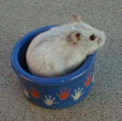
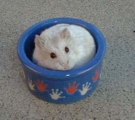
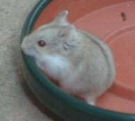

| Potential New Color Gene in the Campbells Page 3 |
||||||||||||||||||||||||||
| As I said, I was encouraged to breed the combined colors of Moscow-opal, Moscow-argente, and Moscow-black.. I bred an ruby-eyed argente mottled male (who may carry dilute but does not carry any other color genes) to a Moscow female. This produced all normals as expected -- all of which carry argente and Moscow. I paired one RE mottled male (all mottleds are ruby-eyed even though not listed) to two of his sisters. They have had two sets of babies so far. There are a total of 12 babies between them. The expected ratio of colors and patterns in the babies is as follows: 9/32 Normals 9/32 Mottled normals 3/32 Argentes 3/32 Mottled argentes 3/32 Moscow 3/32 Mottled Moscows 1/32 Combined argente-Moscow 1/32 Mottled combined argente-Moscow These are the actual results I have gotten so far. In truth, there is a possibility that one or two of the argentes may be the combined color. I am getting some help on this but will probably have to breed these babies to find out. The combined color may be difficult to determine. 2 Argente 3 Argente mottled 5 Moscow 4 Moscow mottled 8 Normal 5 Normal mottled The most surprising thing from these babies is the eye color. Our ruby-eyed mottleds only show the ruby color by flashlight (torch). During normal light, you cannot see the ruby color. In these litters, though, the three Moscow mottleds' eyes appear ruby at all times. The normal mottleds appear to have black eyes except by flashlight. Additionally, all of the argentes have overly bright eyes. This is not uncommon for the mottleds but is uncommon for the unpatterned argentes. Thus it appears there may be something going on with the eye color. Additional data was supplied by a different pairing. I spoke of the dilute blue fawn paired to a Moscow male. I kept a plat daughter in with them. She is a plat carrying Moscow, dilute, opal, argente, and possibly albino. Her father/mate is a Moscow possibly carrying albino. This was done purely for experimentation and not with the expectation to find anything. The expected ratios for their babies would be: 25% Normals 25% Normal platinums 25% Moscow 25% Moscow platinums The actual results of litters so far are as follows: 4 Normal 9 Normal platinums 2 Moscow 8 Ruby-eyed platinums (presumably Moscow colored) The ones with ruby eyes appear to be the Moscow color although with so little color that is not at all certain. I will have to determine it through breeding. There is also a pattern emerging of more than the predicted 50% platinums. This is a general trend I have noticed in my platinum to non-platinum pairs. I do not know the reason for this but do not believe it has anything to do with the presence of the Moscow color in this pairing. So again, there seems to be some interaction between pattern and the eye color with the Moscow color. I have now paired a male ruby-eyed platinum with two mottled Moscow females to see what comes of it. I have also paired two ruby-eyed plats together. |
||||||||||||||||||||||||||
|  | ||||||||||||||||||||||||||
|  | ||||||||||||||||||||||||||
|  | ||||||||||||||||||||||||||
| Ruby-eyed Moscow mottled | ||||||||||||||||||||||||||
| Ruby-eyed Moscow plat (ruby eyes are hard to see in the pictures) | ||||||||||||||||||||||||||
| Back to Page 1 | Back to Page 2 | Page 4 | ||||||||||||||||||||||||
| Back to Campbells Colors Pages | Home | |||||||||||||||||||||||||
| Click here for information on a syrian gene being tested in the US. | ||||||||||||||||||||||||||